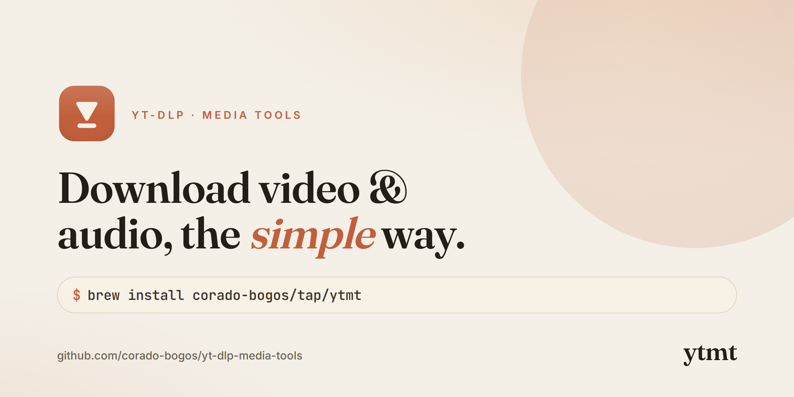
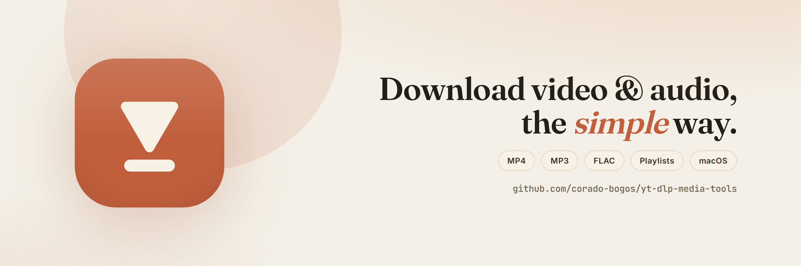
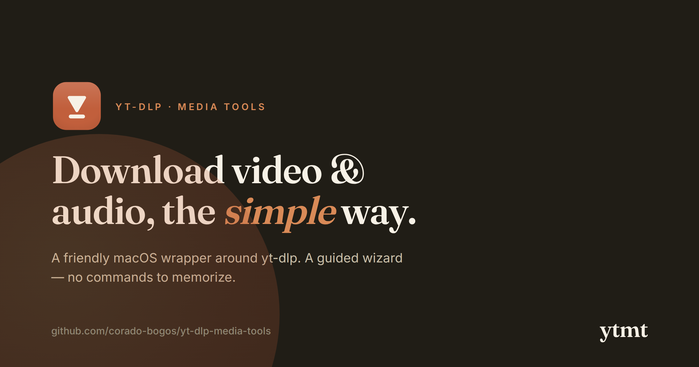
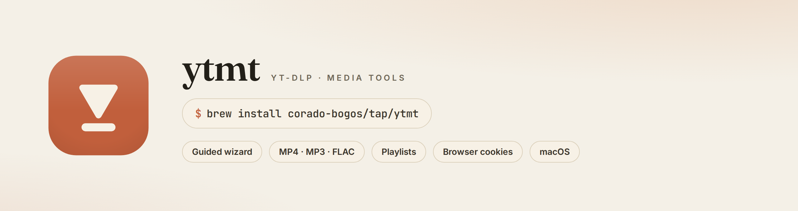

The visual identity for ytmt — a friendly macOS wrapper around
yt-dlp. Warm paper, terracotta
clay, and an editorial serif. One system, used everywhere.
The mark is a downward play-glyph on a rounded clay tile — “press play, save it.” Legible from favicon to billboard.
A warm, low-glare neutral base carries a single confident terracotta accent. Ink is warm near-black, never pure #000.
Fraunces (a warm display serif) for headlines and the wordmark; Inter for UI and labels; JetBrains Mono for commands. Fonts are embedded in brand.css.
Every image below is generated from an HTML source in this folder, so the design never drifts. Re-render anytime with render.sh.




| File | Size | Use |
|---|---|---|
| mark.svg | vector | Scalable logomark — favicons, inline README badges |
| logomark.png | 512² | App / avatar mark, transparent |
| logo-horizontal.png | 1000×300 | Primary lockup (light & -dark variant) |
| logo-stacked.png | 600×640 | Vertical lockup |
| avatar-clay.png | 512² | GitHub / social avatar |
| favicon.png / -64 / -32 | 256/64/32 | Browser tab icon |
| social-preview.png | 1280×640 | GitHub → Settings → Social preview |
| og-card.png | 1200×630 | Open Graph / link unfurls |
| x-banner.png | 1500×500 | X / Twitter profile header |
| readme-hero.png | 1280×340 | Banner at the top of README |
| brand.css | — | Single source of truth: fonts, tokens, mark |